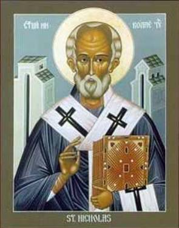

The Translation of St. Nicholas
(Greek Anonymous Account, 13th Century
Manuscript – Part 2)
“And the monk answered: ‘A year ago, my brothers,
our loyal patron appeared in a vision to three of his servants of the monastery
and bade them to announce to the citizens who through fear of the Persians had
fled twelve stadia into the mountains, to return and dwell in Myra. “And if
they do not, in very truth I shall depart into a foreign land.” And as he
predicted, so has it now come to pass, Wherefore, sheathe your naked swords and
have done with all strife among us and let there be an end of harsh threats.
And if it has been granted to you to remove the venerable remains of the Saint,
go on your way in peace, with all good will and resignation from us. For we’ll stand
condemned, if we don’t obey the injunctions of our holy Father. But we trust,
God willing, that he will not allow us, his servants, to remain entirely
bereft.’
“The aforesaid Matthew with his companions,
convinced by these words, put down his sword, and, taking up a huge mallet,
hammered with great force at the cover of the floor, which was over the
oil-exuding tomb, and straightway shattered it. And digging into the hole, led
on by the welling favor of the sacred oil, they discovered a second cover,
which was the lid on top of the splendid chest. When they had opened this but
half way, fearing to shatter it lest perchance they be turned to stone, the
aforementioned Matthew, unable to restrain the ardor of his heart, having no
care for himself lest he suffer any harm, beat upon the cover with great
strength and shattered it to dust. And when they had opened it, they saw the
glory of God, for they found it filled with sacred oil, in the presence of
Grimaldus and Lupus the priests of the merchant ships and some of the sailors.
And immediately such an odor was wafted up to them that they seemed to be
standing in Paradise. And not to them alone was the odor vouchsafed, but it
pervaded even to the harbor to those in the ships. Immediately then,
illuminated by the perfumes they recognized that it was unquestionably within
their power to carry off the remains of the Saint. After this, Matthew, putting
aside all fear from his heart, fully clothed as he was, descended into the
sacred and holy tomb. And while he was descending within, and dipping his hands
into the sacred oil, he beheld the venerable remains glowing like coals of
fire, fragrant above all fragrance. And taking them in his hand he kissed them
and caressed them endlessly. And he handed them over to the two aforementioned
priests. From these portents it was clear to see that Bishop of Christ was
bestowing himself on the Italians.
“The monks who were on watch, when they saw what had
happened, began to wail aloud and cry: ‘He and he alone was our Father up to
now, and never did he allow anyone to do such things. O how great and
inconsolable an affliction has overtaken us!’ And turning to the Saint, they
wailed in lamentation and spoke: ‘Our Lord and most holy father, why are you
leaving us orphaned of your protection in such distress and necessity, and have
become well disposed to strangers and wayfarers, while to us your servants from
our earliest youth, you have shown yourself unhearing and unpitying? Is it true
that you have reckoned as nothing the ministrations of our fathers and of
ourselves, and instead of our being under the protection of your venerable
glory, are you withdrawing from us such intercessions and favors? Alas for our
life, in what darkness you are leaving us and the See of Lycia! Alas, why did
you not allow us to be given to death, rather than be separated from you! Our
benign Father, thou have become embittered, and, as we see, you have made of
thy beloved sons objects of hate. Alas for our possession! How we shall lament
when we see our children and all our goods rendered naught from henceforth! To
whom shall we flee? Who will render us justice from our enemies? Who will stand
patron over our souls?’
“At this juncture, Matthew, taking up the sacred remains, held them carefully. One of the two priests, Grimaldus by name, taking them as they were and placing them in his cloak, took possession of them with clear conscience. But his fellow sailors, wishing to carry off a certain sacred and pleasing icon which was very old and depicted this most reverend and holy Father, were unable to accomplish this, in order that they might not be ignorant of this also, that the servant of Christ in no wise wished to leave his sanctuary entirely without a share of his holy blessing. And when the men had been assembled and had taken up their arms, they, together with the priest bearing the sacred remains on his shoulders, repaired to their ships, praising the ineffable providence and benevolence and power of God. When those who were in the boats heard the great force of their hymn which they were singing to Christ the Savior concerning this bishop, with inexpressible joy they accosted and received their fellow sailors, and adding their own praise to theirs, they lauded their Lord, the giver of crowns, who so crowned and glorified those who had placed their hope in him, and who, moreover, pronounced themselves unworthy to have attained to such a great and divine blessing.
“Meanwhile, the inhabitants of the city learned of
all that had happened from the monks who had been set free. Therefore they
proceeded in a body, a multitude of men and women, to the wharves, all of them
filled and heavy with affliction. And they wept for themselves and their
children, that they had been left bereft of so great a blessing. Then they
addressed the men of Bari: ‘Who are you and from what land, and have you dared
to bring such a calamity upon our See? Whence has come such a conception and
such an affront to us, that you have laid hands on our inspired Father who has
been with us for so long a time, from the time of the great, Christloving
Emperor Constantine, who founded the capital city, so that from time until now
no Emperor or overlord was able to do this? Truly our lord and Father Nicholas
has thought you worthy of great gifts: of leaving us orphans and journeying
forth with you.’ And unable to completely master their incumbent affliction,
entering the sea, they cast themselves in, lamenting, taking hold of the
rudders and oars of the ships. Then they added tears upon tears and wailing and
unassuageable lamentation to their groans, saying: ‘Give us our patron and our
champion, who with all consideration protected us from our enemies visible and
invisible. And if we are entirely unworthy, don’t leave us without a share, of
at least some small portion of him.’

“While they were making lament in such and similar wise, immediately the men of Bari answered most kindly, saying: ‘Realize, brothers, that we are Christians, and that the Saint appeared to us in a vision and bade us disembark here and carry away his venerable remains. And brethren, why do you stand frustrated and desolate over him? Behold, you yourselves have said, many generations have passed under the protection of the Saint, and you and your fathers have possessed his healings and blessings. But now his will is to give light to the western world, departing from hence. And now in place of these remains there is for you his venerable and allholy tomb whence wells forth the allholy oil, and likewise his venerable icon which works great wonders. For reasonably and justly does it happen that our preeminent city of Bari should possess so great a Father and protector.’ Thus did the men in the ships make answer to the people. But the citizens of Myra, seeing on board one of the monks of the sacred church running around him with feeling, struck at him sharply, saying: ‘You have taken money to betray our protector and champion.’”
Thought to Ponder:
Thought to Discuss around the Dinner Table:
The Translation of St. Nicholas
(Greek Anonymous Account, 13th Century
Manuscript – Part 2)